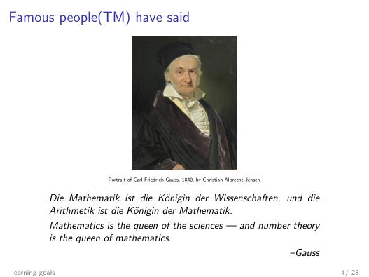

BM20A9200 数学A · 第 09 / 15 讲
第 9 讲 · 整除、最大公因数与欧几里得算法
Divisibility, Greatest Common Divisors and the Euclidean Algorithm
所属章节：第 4 章 数论与模运算
资料来源 · 3 项 / 已附 0 项
09-lesson.pdf未附原文件10-exercise.pdf未附原文件Lecture6_Number theory.pdf未附原文件
未附文件仅列原始名称；版本与核对日期由维护者登记。
本节定位
从第 9 讲开始进入数论（Lessons 9–11）。本讲只处理“整数的除法”：整除（divisibility）、最大公因数（gcd）、欧几里得算法，以及用它解二元一次不定方程 ax + by = c。
这条线索会一路延伸到第 10 讲的模运算与第 11 讲的 RSA：RSA 的私钥 d 就是解 ed ≡ 1 (mod φ)，而它等价于解一个 ax + by = 1 型的不定方程。所以本讲的算法必须练到“不用想、直接写”的熟练度。
学完本节你应当能够：
- 用定义（存在 q 使 n = q·d）判断与证明整除，而不是用除法
- 证明整除的基本引理，特别是“若 c|a 且 c|b 则 c|ax + by”
- 写出带余除法 a = qb + r（0 ≤ r < b），并处理负数 a
- 用欧几里得算法求 gcd(a, b)，并解释它为何正确
- 用“反推欧几里得”求 ax + by = gcd(a, b) 的一组解
- 判断 ax + by = c 是否有解（gcd | c），并写出全部解的通式
9.1 数论研究什么
数论（number theory）研究整数的性质。典型问题：素数的性质（公式、统计、与其他数的关系）；方程的整数解，如 xⁿ + yⁿ = zⁿ、ax + by = c、x² = 4y + 2（这类只求整数解的方程叫丢番图方程 Diophantine equation）；整除性问题（x 何时整除 y）。
应用：密码学（cryptography，只有目标收件人能读的秘密书写）、纠错码（error-correcting codes，能在传输错误后自行纠正）、哈希函数（hash functions，单向秘密、数据完整性校验、快速数据库）。Gauss 的名言是：“数学是科学的皇后，而数论是数学的皇后。”
本课程在 9–11 讲会做四件事：解 ax + by = c；证明素数分解定理；学模运算并计算 2²⁰²⁶ 的最后两位；看 RSA 如何工作。这只是数论的短介绍，深入内容可参考 Rose 的《A Course in Number Theory》。
9.2 整除的定义与基本引理
定义：若存在 q ∈ Z 使 n = q·d，则称 d 整除 n（d divides n），记作 d | n；q 称为商。不整除记作 d ∤ n。例：5 | 10，但 4 ∤ 10。
引理（对任意整数 a, b, c）：(a) a | a、a | 0、1 | a、−1 | a；(b) 0 | a 当且仅当 a = 0；(c) 若 c > 0 且 a | c，则 c ≥ a；(d) 若 a | b 且 b | c，则 a | c（传递性）；(e) 若 c | a 且 c | b，则对一切 x, y ∈ Z 有 c | ax + by（线性组合）。
逐条的理由都很短：(a) a = 1·a、0 = 0·a、a = a·1、a = (−a)(−1)。(b) 0 | a 意为存在 q 使 a = q·0 = 0，故只有 a = 0。(c) a | c 且 c > 0 给 c = qa（q ≥ 1），故 c ≥ a。(d) b = q₁a、c = q₂b ⇒ c = (q₁q₂)a。(e) a = q₁c、b = q₂c ⇒ ax + by = (q₁x + q₂y)c。
9.3 整除的例题
Ex1：4 | 18？不成立（18 = 4·4.5，商不是整数）；−3 | 27？成立（27 = (−9)·(−3)）；10 | 32050？成立（32050 = 3205·10）。判断时只需找到那个 q。
Ex2：证明若 c | a 且 c | b，则对一切 x, y 有 c | ax + by。证明：由假设存在 q₁, q₂ 使 a = q₁c、b = q₂c，于是 ax + by = (q₁x + q₂y)c，而 q₁x + q₂y ∈ Z，故 c | ax + by。□ 这条引理是后面所有整除证明的主力。
Ex3：F = { n ∈ N : n | 12 } = {1, 2, 3, 4, 6, 12}（注意 0 不能作为除数，且 n ∈ N 含 0，但 0 ∤ 12）。Ex4 要求画出 F 上“整除”关系的网络图：从 x 指向 y 当且仅当 x | y，于是 1 指向所有元素，2 指向 4、6、12，3 指向 6、12，等等。
Ex5：f(n) = 32n+2 + 8n − 9，证明 8 | f(n)。做法一（归纳）：n = 0 时 f(0) = 9 − 9 = 0；且 f(n+1) − f(n) = 32n+4 − 32n+2 + 8 = 32n+2(9 − 1) + 8 = 8(32n+2 + 1)，被 8 整除，故由归纳得证。做法二（模 8）：3² = 9 ≡ 1，故 32n+2 = 9n+1 ≡ 1，而 8n ≡ 0、−9 ≡ −1，三项相加 ≡ 0（mod 8）。
9.4 最大公因数
动机：4x + 2y = 5 无整数解，因为左边永远是偶数而 5 是奇数。更一般地，若存在 m 使 m | a、m | b 但 m ∤ c，则 ax + by = c 无解。于是我们关心“同时整除 a 与 b 的最大者”。
定义：gcd(a, b) 是满足 m | a 且 m | b 的最大 m ∈ N。定理：若 a, b 不全为零，则 gcd(a, b) 存在且唯一。证明：令 D = { q ∈ N : q | a 且 q | b }，则 1 ∈ D 且 D ⊆ {1, 2, …, max(|a|, |b|)}，故 D 非空且有上界，因此有唯一最大元。□
三条性质必须记住：① gcd(a, b) 是能写成 ax + by（x, y ∈ Z）的最小正整数；② 若 d | a 且 d | b，则 d | gcd(a, b)；③ 若 a | n、b | n 且 gcd(a, b) = 1，则 ab | n。
例子：5 | 20、5 | 30，故 5 | gcd(20, 30) = 10；若 4 | n 且 7 | n，因 gcd(4,7) = 1，故 28 | n；但 4 | 24、8 | 24 而 gcd(4,8) = 4 ≠ 1，此时 32 ∤ 24——这说明性质 ③ 的“互素”条件不能省。
9.5 带余除法
定理（division algorithm）：给定 a, b ∈ Z 且 b > 0，存在唯一的整数 q（商）与 r（余数）使 a = q·b + r 且 0 ≤ r < b。
存在性（了解即可）：集合 { a − n·b : n ∈ Z } ∩ N 非空，取其最小元 ε = a − n_ε·b，令 r = ε、q = n_ε。若 r ≥ b，则 r′ = a − (n_ε + 1)b 是更小的非负元素，矛盾，故 r < b。
唯一性：设 a = qb + r = q′b + r′ 且 0 ≤ r, r′ < b。则 (q − q′)b = r′ − r。若 q ≠ q′，则 |r − r′| = |q − q′|b ≥ b，但 r、r′ 都小于 b 且非负，|r − r′| < b，矛盾。故 q = q′，进而 r = r′。□
Ex6：53 = 7·7 + 4（q = 7、r = 4）；−40 = (−14)·3 + 2（注意 r 必须非负，故 q 要“往小取”，得 q = −14、r = 2）；2634 = 21·123 + 51。这一“负数除法”是考试常见坑：−40/3 若写 q = −13、r = −1 就违反 0 ≤ r < b。
9.6 a mod b
a mod b 是一个函数：输入 a ∈ Z（正、负、零都可）与 b ∈ Z⁺，输出唯一满足 a = qb + r、0 ≤ r < b 的 r，即最小非负余数（least non-negative residue）。
Python 里就是 %：−21 % 12 = 3（因为 −21 = (−2)·12 + 3），365 % 7 = 1。注意 C 语言与 Java 的 % 对负数会给出负余数（−21 % 12 = −9），两者不同——考试用数学定义，不用某种语言的实现。
9.7 欧几里得算法
求 gcd 的高效方法是欧几里得算法（Euclidean algorithm）。先看例子（265 与 30）：设 d 是同时整除 265 与 30 的数。由 265 = 8·30 + 25 得 d | 25；由 30 = 1·25 + 5 得 d | 5；由 25 = 5·5 + 0 得“任何数都整除 0”。于是 d | 5，而 5 的最大约数是 5。反向检查：5 | 25、5 | 30，由第一式得 5 | 265，故 5 确实是公约数。因此 gcd(265, 30) = 5。
算法本身：gcd(a, b) = 若 b = 0 则 a，否则 gcd(b, a mod b)。写成竖式就是不断做带余除法，直到余数为 0，最后一个非零余数就是 gcd。
Ex8：gcd(10043, 616)。计算：10043 = 16·616 + 187；616 = 3·187 + 55；187 = 3·55 + 22；55 = 2·22 + 11；22 = 2·11 + 0。故 gcd = 11。
9.8 反推欧几里得：求 ax + by = gcd(a, b)
欧几里得算法不仅能算 gcd，还能顺便给出“把 gcd 写成 a、b 的整数线性组合”的方法：从最后一个非零余数开始，逐行把余数用上一层的数表示，最后回代到 a、b。
以 gcd(265, 30) = 5 为例：5 = 30 − 1·25；把 25 = 265 − 8·30 代入得 5 = 30 − (265 − 8·30) = 9·30 − 1·265。故 265·(−1) + 30·9 = 5，即 x = −1、y = 9。
以 10043 与 616 为例（源文件 p22）：从下往上写 11 = 55 − 2·22，把 22 = 187 − 3·55 代入得 11 = 7·55 − 2·187，再把 55 = 616 − 3·187 代入得 11 = 7·616 − 23·187，最后把 187 = 10043 − 16·616 代入得 11 = 375·616 − 23·10043。故 10043·(−23) + 616·375 = 11。
操作要点：每次代入只替换“较大的那个数”，系数一路累积；最后检查一遍（把 x、y 代回原式）以防符号出错。
9.9 当 c ≠ gcd(a, b)
若 gcd(a, b) ∤ c，则无解（因为 gcd 整除 a 与 b，必整除 ax + by，故必整除 c）。若 gcd(a, b) | c 但 c ≠ gcd，则先解 ax′ + by′ = gcd(a, b)，再把整式乘以 c/gcd(a, b)。
例：解 265x + 30y = −50。已知 gcd = 5，且 265·(−1) + 30·9 = 5。两边乘 −10 得 265·10 + 30·(−90) = −50，故 x = 10、y = −90 是一组解。
定理：设 a, b, c ∈ Z 且 a、b 不全为零，则 ax + by = c 有整数解当且仅当 gcd(a, b) | c。求一组解的三步指令：(a) 算 gcd(a, b)；(b) 检查 gcd | c（否则停）；(c) 用反推欧几里得解出 ax′ + by′ = gcd，再乘以 c/gcd。
9.10 全部解的公式
设 (x₀, y₀) 是一组解，(x₁, y₁) 是另一组。两式相减：a(x₁ − x₀) = −b(y₁ − y₀)。两边除以 g = gcd(a, b) 得 (a/g)(x₁ − x₀) = −(b/g)(y₁ − y₀)。因 gcd(a/g, b/g) = 1，故 a/g 必须整除 (y₁ − y₀)，即 y₁ = y₀ + (a/g)k；代回得 x₁ = x₀ − (b/g)k。
反过来（⇐），把这对式子代入原方程，两项的 k 部分恰好抵消，故对任意 k ∈ Z 都是解。两个方向合起来给出定理：(x₀, y₀) 的全部解为 {(x₀ − (b/g)k, y₀ + (a/g)k) : k ∈ Z}。
9.11 完整范例：1032x + 320y = 56
第一步，求 gcd：1032 = 3·320 + 72；320 = 4·72 + 32；72 = 2·32 + 8；32 = 4·8 + 0。故 gcd(1032, 320) = 8。
第二步，检查整除：c/g = 56/8 = 7 ∈ Z，故有解。
第三步，解 1032x′ + 320y′ = 8：从 8 = 72 − 2·32 开始，代 32 = 320 − 4·72 得 8 = 9·72 − 2·320，再代 72 = 1032 − 3·320 得 8 = 9·1032 − 29·320。
第四步，乘以 7：1032·63 + 320·(−203) = 56，故 (63, −203) 是一组解。
第五步，写全部解：x = 63 − (320/8)k = 63 − 40k，y = −203 + (1032/8)k = −203 + 129k，k ∈ Z。取 k = 1 得 (23, −74)，取 k = 2 得 (−17, 55)，可见 x 在 63 与 23 之间跨过 0，最接近 0 的两组是 (23, −74) 与 (−17, 55)。
Ex13：834x − 24y = 54。gcd(834, 24) = 6，6 | 54。反推：6 = 24 − 18 = 24 − (834 − 34·24) = 35·24 − 834，即 834·(−1) + 24·35 = 6；乘 9 得 834·(−9) + 24·315 = 54。注意原式是 834x − 24y = 54，故 x = −9、y = −315。全部解：x = −9 + 4k、y = −315 + 139k（因 b/g = 24/6 = 4，a/g = 834/6 = 139）。
Ex14：75x − 27y = 10。gcd(75, 27) = 3，而 3 ∤ 10，故无整数解。这一问只考“检查 gcd 是否整除 c”，一句话即可拿分。
判断 d | n 要按定义写存在 q ∈ Z 使 n = q·d，不要写 n/d 是整数，因为整数范围内商可能根本不存在。负数同样成立：−3 | 27 因为 27=(−9)(−3)。0 | a 当且仅当 a=0，别把除数为零当成可整除。线性组合引理是后续主力：若 c|a 且 c|b，则对一切 x,y 有 c | ax+by，证明只需把 a=q₁c、b=q₂c 代入得 ax+by=(q₁x+q₂y)c。解 ax+by=c 的路线是算 gcd、检查整除、反推欧几里得求一组解、再写通解。
原版图页（源 PDF 插图页）

| English | 中文 | 说明 / 例句 |
|---|---|---|
| number theory | 数论 | The study of properties of the integers. |
| divisibility | 整除 | d | n iff n = q·d for some q ∈ Z. |
| quotient | 商 | The q in n = q·d, or in a = q·b + r. |
| remainder | 余数 | The r with 0 ≤ r < b in a = q·b + r. |
| greatest common divisor | 最大公因数 | The largest m ∈ N dividing both a and b. |
| relatively prime | 互素 | gcd(a, b) = 1. |
| division algorithm | 带余除法 | Unique q, r with a = qb + r and 0 ≤ r < b. |
| least non-negative residue | 最小非负余数 | a mod b, the r in [0, b). |
| Euclidean algorithm | 欧几里得算法 | gcd(a,b) = gcd(b, a mod b) until the remainder is 0. |
| Diophantine equation | 丢番图方程 | An equation solved in integers, e.g. ax + by = c. |
| linear combination | 线性组合 | ax + by; if c divides a and b it divides every such combination. |
| general solution | 通解 | x = x₀ − (b/g)k, y = y₀ + (a/g)k, k ∈ Z. |
竖式：10043 = 16·616 + 187；616 = 3·187 + 55；187 = 3·55 + 22；55 = 2·22 + 11；22 = 2·11 + 0。故 gcd = 11。
反推：11 = 55 − 2·22；代入 22 = 187 − 3·55 得 11 = 7·55 − 2·187；代入 55 = 616 − 3·187 得 11 = 7·616 − 23·187；代入 187 = 10043 − 16·616 得 11 = 375·616 − 23·10043。
故 10043·(−23) + 616·375 = 11，即 x = −23、y = 375。
检验：10043 × (−23) = −230989；616 × 375 = 231000；两者相加 = 11，正确。
gcd：1032 = 3·320 + 72；320 = 4·72 + 32；72 = 2·32 + 8；32 = 4·8 + 0，故 gcd = 8；8 | 56，有解。
反推：8 = 72 − 2·32 = 72 − 2(320 − 4·72) = 9·72 − 2·320 = 9(1032 − 3·320) − 2·320 = 9·1032 − 29·320。
乘 56/8 = 7：1032·63 + 320·(−203) = 56，故 (63, −203)。
全部解：x = 63 − 40k、y = −203 + 129k（k ∈ Z）。取 k = 0,1,2 得 (63, −203)、(23, −74)、(−17, 55)。
先算 gcd(75, 27)：75 = 2·27 + 21；27 = 1·21 + 6；21 = 3·6 + 3；6 = 2·3 + 0，故 gcd = 3。
检查整除：3 ∤ 10（10 = 3·3 + 1）。
结论：无整数解。理由：3 整除 75 与 27，故 3 整除 75x − 27y；若等于 10，则 3 | 10，矛盾。
要求 −40 = q·3 + r 且 0 ≤ r < 3。
试 q = −13：−39 + r = −40 ⇒ r = −1，不合格。试 q = −14：−42 + r = −40 ⇒ r = 2，合格。
所以 q = −14、r = 2。也可用 −40 mod 3 = 2 直接得余数，再反推 q = (−40 − 2)/3 = −14。
常见错误：写 q = −13、r = −1，或写 q = −14、r = 2 但把余数写成 −1。记住余数永远落在 [0, b)。
用归纳。n = 0：3² + 0 − 9 = 0，被 8 整除。
设 8 | f(k)。计算差：f(k+1) − f(k) = 32k+4 − 32k+2 + 8 = 32k+2(3² − 1) + 8 = 8·32k+2 + 8 = 8(32k+2 + 1)，被 8 整除。
故 f(k+1) = f(k) + 8(…) 也被 8 整除，由归纳法得证。□
另解（模 8）：3² ≡ 1 (mod 8) ⇒ 32n+2 ≡ 1；8n ≡ 0；−9 ≡ −1；相加 ≡ 0 (mod 8)，即被 8 整除。
- 判断真假并说明理由：7 | 91、12 | 100、−5 | 0、0 | 7。
- 求 gcd(161, 434)，并判断 161x − 434y = 5 与 161x − 434y = 21 是否有解。
- 求 84x + 30y = 6 的一组解与全部解。
- 计算 2345 除以 17 的商与非负余数，并写出 2345 mod 17。
- 设 a | n、b | n 且 gcd(a, b) = 1。证明 ab | n。
参考答案与思路
1. 7 | 91 真（91 = 13·7）；12 | 100 假（100 = 8·12 + 4）；−5 | 0 真（0 = 0·(−5)）；0 | 7 假（不存在 q 使 7 = q·0）。
2. 434 = 2·161 + 112；161 = 1·112 + 49；112 = 2·49 + 14；49 = 3·14 + 7；14 = 2·7 + 0，故 gcd = 7。7 ∤ 5，故第一个方程无解；7 | 21，第二个有解（把 gcd 的表示乘以 3 即可）。
3. gcd(84, 30)：84 = 2·30 + 24；30 = 1·24 + 6；24 = 4·6，故 gcd = 6，且 6 = 30 − 24 = 30 − (84 − 2·30) = 3·30 − 84，即 84·(−1) + 30·3 = 6。全部解：x = −1 + 5k、y = 3 − 14k（b/g = 30/6 = 5，a/g = 84/6 = 14）。
4. 17·137 = 2329，2345 − 2329 = 16，故 q = 137、r = 16，即 2345 mod 17 = 16。
5. 由 a | n 得 n = q₁a；由 b | n 得 b | q₁a。因 gcd(a,b) = 1，故 b | q₁，设 q₁ = q₂b，则 n = q₂ab，即 ab | n。□（这条性质在 9.4 已作为结论列出。）
考点分层
方法清单
欧几里得算法（手算版）
- 把较大的数写在左、较小的写在右
- 做带余除法 a = q·b + r，余数必须非负
- 把 (a, b) 换成 (b, r)，重复
- 当余数为 0 时，最后一个非零余数就是 gcd
- 把每一步都写出来，便于反推与检查
解 ax + by = c 的四步
- 算 g = gcd(a, b)
- 检查 g | c：不整除则写出“无解”并说明理由
- 反推欧几里得，求 ax′ + by′ = g 的一组解
- 两边乘以 c/g，得到一组解 (x₀, y₀)
- 写通解 x = x₀ − (b/g)k、y = y₀ + (a/g)k，k ∈ Z
负数的带余除法
- 先写出目标形式 a = q·b + r 与约束 0 ≤ r < b
- 用 a mod b（Python 的 %）直接得 r
- 由 q = (a − r)/b 反算商
- 把 q、r 代回检验，确认 r 落在 [0, b)
| 源文件 | 页码 | 覆盖的知识点 |
|---|---|---|
| 09-lesson.pdf | p3–p7 | 数论的研究对象、应用（密码学/纠错码/哈希）、Gauss 名言、本课程三讲路线 |
| 09-lesson.pdf | p8–p9 | 整除的定义与五条引理、Ex1–Ex5（含 8 | 32n+2+8n−9） |
| 09-lesson.pdf | p11–p13 | 用反证法看 4x+2y=5 无解、gcd 的定义与存在唯一性、三条性质 |
| 09-lesson.pdf | p15–p17 | 带余除法的存在性与唯一性证明、Ex6–Ex7、a mod b 函数与 Python % |
| 09-lesson.pdf | p18–p19 | 欧几里得算法的原理（gcd(265,30)）、Ex8 gcd(10043,616) |
| 09-lesson.pdf | p21–p25 | 反推欧几里得、10043x+616y=11、c ≠ gcd 时乘倍数、充要条件与三步指令、Ex9–Ex11 |
| 09-lesson.pdf | p28–p34 | 1032x+320y=56 的四步全过程、全部解公式的推导（三个部分）、Ex12–Ex14 |
| 10-exercise.pdf | Ex4–Ex6 | gcd(2023,1428)、3x−5y=7、21x−35y=24、97x+127y=1、219x−396y=−12 |
| （跳过） | p5–p6、p11、p20–p21、p26–p27 | 目录与讨论页，内容已并入正文 |
| （补充拓展） | — | Bézout 恒等式、模 8 与模 9 的快捷证明、负系数方程的标准化处理 |